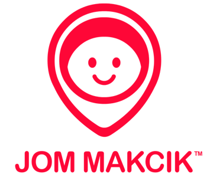
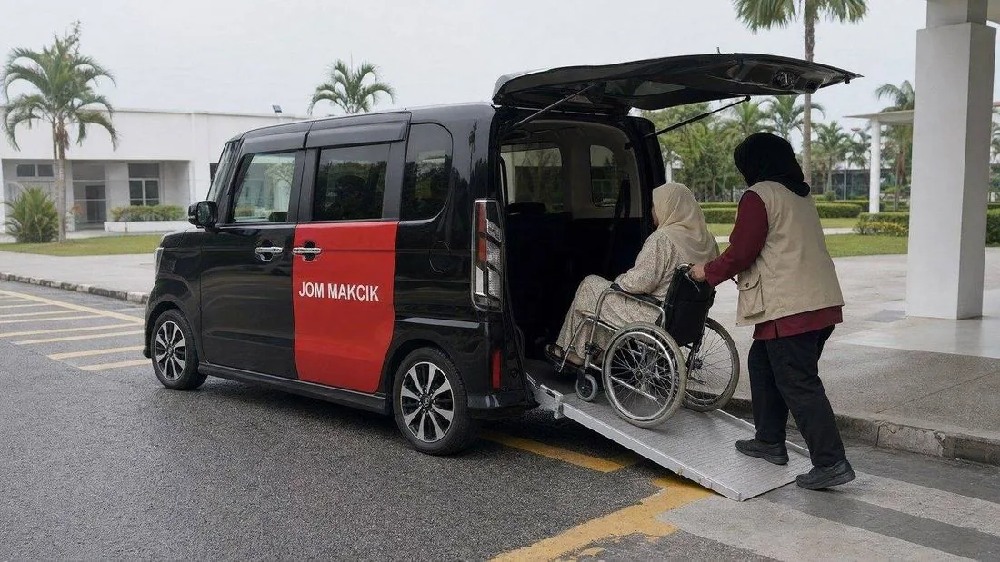
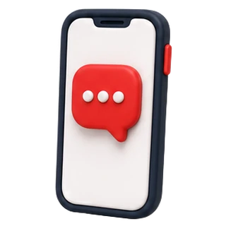
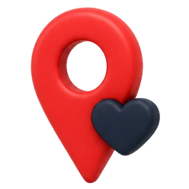
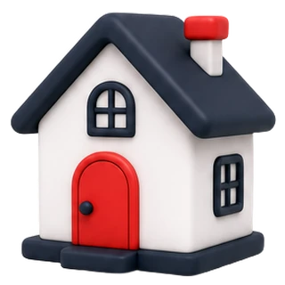
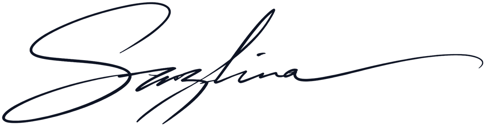
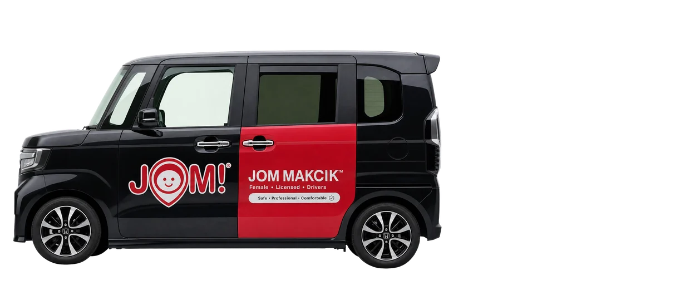
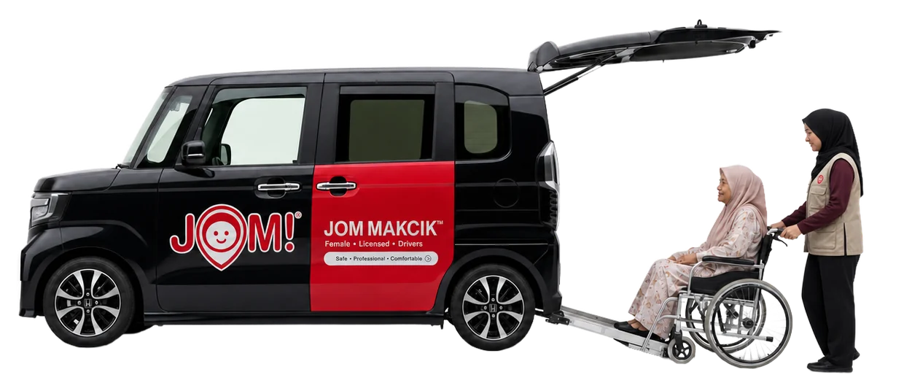

How the site looks, and why every part looks that way
Every value in this book is read out of Prototype Web 1's own stylesheet, not described from memory. Where a size is a clamp, the clamp is printed. Where a colour is used on a background, the contrast is computed from the two hex values. Where a rule exists because Bazil reversed something on 9 or 10 September, the reversal is drawn side by side in part 00 so it is not tried again. The specimens are set in the real faces, the components are built from the real declarations, and part 14 shows the shipped page at two widths.
What was decided, drawn side by side
The prototype went through five rounds on 9 and 10 September. Most of what looks like an obvious improvement to a fresh pair of eyes was already tried once and removed on instruction. The left cell of each pair is what shipped first, the right cell is what shipped last, and the line underneath is the instruction, quoted where it was short enough to quote.
website should be more white, then
still looks not red, now yellow brown. The cream read as yellow beside the red and was dropped twice.
remove the lines. No rules, dividers or grid borders anywhere. Whitespace and a change of ground do the separating.
try not to have eyebrow at the websites. No small uppercase label above a heading, and no monospace anywhere on the client site.
remove all the dashesand
find a better proper professional font. Mono is confined to this admin bar. Separators are commas or new sentences.
dont put them in a box, then
i hate the shadow effect, make it look like BASIC, Palantir, SpaceX. A card is a flat tile: the photograph full bleed, the text on the page under it, or a flat tint panel where a surface is needed. Never a border, never a shadow.
logo symbol on the left and the wording on the right. The stacked artwork on jommakcik.my was cropped into two files rather than redrawn.
i want the logo to be coloured the one scrolling. Full colour, one uniform 56px height, looping left to right, paused on hover.
Referral partner
Referral partner
no need the cutting edge on the right. Flat grey cards, no notch, no border, flowing right like the Palantir reference.
for lack of transport
remove icon,
and 1 line for font,
make the numbers red. Four figures in red, one line captions, no icons, no dividers.

make her picture square,
push her body to the top a bit. Square crop, monochrome grade, focus at 30% from the top. Colour returns when the brand has a shoot in red.
make sazlina sign more realistic, find way. The typed script read as a font. The drawn path reads as a hand. A scan of her real signature replaces it, part 13.
navigation bar shouldnt be there when on top remember. Transparent over the film, white type; turns white with a lift after 8px of scroll.
Also decided, not drawn
| Decision | What it means when you touch the file | |
|---|---|---|
| Dark in one place | The banner is the film on night #080C16. Every other section is white. The film section was dark once and was made light on remove black layout. | |
| Padding, halved twice | Sections run at 36px, not the 100px of the first draft. Air was put back only where asked: the stat band at 66px, the footer at 72px, the film at 48px. | |
| Wider content | Container 1340px with an 18px gutter, so the side margins are half what they were on the left right padding of the website is still bad. | |
| One primary button | Book a ride is the one filled red button per screen. Watch the film is a bordered secondary. Buttons are 50px tall with a 2px radius, reduced from 56px on button size reduce a bit. | |
| Team once | The CEO appears once, with the signature. She is not repeated in the team grid, on if the ceo is already at the top no need for her at the bottom. | |
| Other pages greyed | Services, Pricing, Coverage and About are their own pages in the plan. In this version they sit in the nav greyed and unclickable, and the footer lists them with a small soon. | |
| Chop, with the real logo | The comparison photo carries a circular stamp bottom left, rotated 9 degrees. It went from a drawn seal, to a red disc with the real pin, to a white disc with the whole logo, and finally to a serrated red rosette with arced text and the real logo at its centre, on make sure centre is the actual jom makcik logo, the badge should be the Makcik logo as welland now the badge does not look like a badge. | |
| No grey ground, 10 Sep evening | The cool near white that carried alternate sections went too, on no grey backgroundand no grey layout. Every section is white; cards, photographs and the pricing table separate from the page by shadow alone. | |
| One radius, and it is zero | Chapter thumbnails shipped rounder than the cards, on which: if Jom Makcik use curved corner then it must be consistent. One token, --r, sits on every card, image, button and control, and since the flat pass it is 0: square, the way BASIC, Palantir and SpaceX cut theirs. Discs stay discs. | |
| Flat, not floating | On i hate the shadow effect, it looks like a templateand to make the website look premium: every decorative drop shadow is gone. Service cards became tiles, the photograph full bleed with the text on the page under it. The comparison is two flat tint panels, ours in the red tint, theirs in grey. Prices are white rows on a light panel. Coverage is boxless. The header, the stamp, the buttons and the film frame carry no shadow. References read on 10 September: BASIC/DEPT (no shadows, no borders, no tints, square corners, images full bleed inside the tile, separation by spacing), and the same family at Palantir and SpaceX. | |
| Icons never on a photograph | The red plates that overhung the service photographs were removed on icon looks very bad and no need to put icon on the visuals. Three icons drawn instead, set in the card body, each with a part that moves on hover, part 04. | |
| Play without the disc | The film link in the banner lost its red disc on just the play button without the round should be enough. A bare triangle in the on-night red now sits inside the bordered pill. | |
| A slimmer bar | The language tray and the burger tile went, the greyed pages dimmed to 46% white over the film, the whole bar tightened, on make the navigation bar better. The logo runs in the lighter on-night red while the bar is transparent. | |
| The signature, generated | The drawn path was replaced by the name set in a signature face on just generate a signature online; that still read as a font, on signature doesn't look like signature, so it was generated as a real fountain pen signature in Higgsfield and cut to a transparent PNG. Part 13 records it as generated. | |
| Flags for the areas | The four coverage cards carry the state flag of each area, drawn from the published descriptions, on put visual and flag of the area. | |
| Nothing dead is silent | Every unbuilt page and greyed item answers a click with a small dark notice, Not available in the demo version, in the current language, on anything that cant click just say not available in demo version pop up. | |
| The footer earns its height | Taller, with the hospital photograph beside the closing buttons, and an AbiliCar that drives in, lowers its ramp and takes a chair on board once the strip is on screen, on taller footer and make animation gimmick something that jom makcik has. | |
| The review round, 10 Sep late | Thirty six findings from the 05 Review tab, all fixed in the prototype except the facts only the company holds: the footer soon items lifted to #667085 for AA, footer headings made h3, the phone action bar put in a landmark, a hidden heading on the founder section, a privacy notice in both languages, a back to top disc on desktop, on-page links in the phone menu, the rail made a swipeable strip on touch, six partner cards added, the heavy images cut, favicon and structured data added. | |
| Pricing carries a visual and a verdict | On make this look better with proper icons, visual higgsfields, and align height: a drawn icon on each price row, a generated photograph of a daughter reading a written quote beside her mother in the left column so both columns end level, and the dialysis quote as a full width band under them with its figure on the right. | |
| The two scenes move | On add some gifs looping on the websiteand failure and success: the success and failure photographs were animated into five second muted loops in Higgsfield. Each loads only when its card is on screen, plays over its own photograph as poster, pauses off screen, and never plays under reduced motion. | |
| Weekday hours stay honest | The hero says weekdays because jommakcik.my says so. Nothing in the design implies a service that has not been confirmed. | |
| The header gets out of the way | On when scrolling down the navigation bar is still visible, not supposed to, you know the drill: past 160px the header slides up after 18px of downward travel and returns after 8px upward, so a reader going down sees content and a reader going up finds the nav at once. Never while the menu is open. | Kept |
| The rhythm pass, 11 Sep | On vertical spacing is a problem for this website: sections at 88px, bands at 88, the comparison and the film at 96, the stat band 96 over 84, the partner wall 72, the closing band 128, the footer 128 over 88, and 64px between a heading and its grid. The hero proof points wrap in a row with 56px between them. One scale, no exceptions. | Kept |
| Coverage is a map | On more spacing and put the flag on the picture at the location: the four cards became a drawn map of the peninsula from the geoBoundaries state outlines, the four areas tinted, Kuala Lumpur and Putrajaya in red, with the state flags pinned at their places and the list of what each area gets beside it. | Kept |
| FAQ in two columns | On make this a lot better: the heading, an intro and a WhatsApp button stay put on the left while the six questions open on the right, at 22px with the red icon, 28px rows and 17.5px answers. | Kept |
| Is it for you | The one framework the 52 lacked on the page: four lines a family can say yes to and one honest no, between the services and the photographs. From the Methodas catalogue check, plan part 03. | Kept |
| The van, photographed | On need to make sure super realistic, use Higgsfield: the drawn van retired. Two photoreal frames of the company's own livery, generated from its real van photograph, cut out and cropped to one shared frame so they overlay to the pixel, and an eight second boarding clip between them, multiplied onto the white strip. The 2D drawing is kept in part 09 as the record of the previous answer. | Kept |
| The van drives forward | On reverse is good but after reversing need to move forward, put a layer of the wheel spinning: the van reverses in from the left, boards, and drives forward out to the left. Both wheels are cut from frame A at the tyre radius and turn 1480 degrees each way on the same easing as the body. | Kept |
| Icons, generated | On much better premium icons please: the drawn line set retired. Two nine icon sheets generated in Higgsfield as a red and ink clay render, cut and background removed, 17 in use: three hero facts, three services, five pricing rows, six FAQ rows, plus the map pin and the head office house. A service icon lifts 4px on hover. | Kept |
| The qualification has photographs | On i need actual higgsfield visuals for this: four documentary photographs generated to a brief, one per line, 4 by 5, two up on a phone: the daughter at home, the lobby, the dialysis centre, the driver looking back. | Kept |
| The saving story is its own section | On content here a bit messy, maybe the bottom one is a separate section that has its own image: the household quote and the RM1,500 left the pricing grid for a section of their own, beside a generated photograph of the journey home. | Kept |
| The team in red | On can it be red theme: the founder and the three portraits are red duotones, the monochrome file screened over #B3000E, the caption gradient in the deep red, and the true photograph on hover. | Kept |
| The comparison aligned | On align the height: the 22px drop on the standard ride card removed; both cards share the same top and, by stretch, the same bottom. | Kept |
| The map, second version | On make a better map, modern, premium, with some animations: a dotted land texture, the four areas rising in sequence, journey lines running from Nilai, 3D pins dropping with a pulse, the head office marked with a house, and the list and the map highlighting each other on hover and focus. | Kept |
| The banner film, self hosted | On why video not looping and light for picture one and why got lines: the YouTube background retired. An eight second loop generated from the company's own van photograph plays and loops on its own; phones and reduced motion keep the still. Text selection is the brand red with white text, white with ink on the dark bands, instead of the browser blue. | Kept |
| A calendar on Book a ride | On add an icon at the book a ride button: an 18px calendar with a tick, in the header and the hero, with the label in a span so the language swap keeps the glyph. | Kept |
| The source line sits under the numbers | On should be better positioned: 26px under the stat grid at 13.5px, the band closing at 72px. | Kept |
| Phones see more per screen | On make sure responsive looks amazing and can see a good amount of content in one go: under 640px sections close to 48px, grids sit 30px under their heading, the qualification tiles go two up, service and comparison photographs shorten to 16 by 10 and 16 by 9, the hero to 520px. | Kept |
| A Q&A tab | Tab 06: the questions Dr Sazlina is likely to ask, the twelve we ask her, the objections, the family's questions and the running order for Friday. | Kept |
| The uniform is read, never invented | On you got the uniform wrong and the logo on it, please plan ahead: the first edit put the team in a red polo that does not exist. The uniform is now a written spec in part 07, taken off the company's own training and hospital photographs: khaki field vest, the real pin mark on the chest, long sleeves to the wrist, the hijab over the chest. Every generated person on the site was reissued to it. | Kept |
| Modesty is a build rule | Women in any picture on this site wear sleeves to the wrist with the wrists covered and the hijab drawn over the chest. A picture that breaks it is replaced, not shipped. | Kept |
| The team in uniform, in colour, cropped to the waist | On edit them to wear the actual Jom Makcik uniform so you can do full colour, background suitable, identity the same: the red duotone lasted an hour. The four studio portraits are edited in Higgsfield with the photograph as the reference, so the face, glasses, pose and age are the person's own, and only the clothing and the ground change. The monochrome originals are kept in assets/img/_orig. | Kept |
| The van meets the screen edge | On the footer animation is cut out by a mysterious wall, best edge of screen: the strip carried the 1340px container, so the van was clipped mid body as it arrived. The strip is now full bleed and the van enters and leaves at the window edge. | Kept |
| No red on red | On overlapping red is not good: Kuala Lumpur and Putrajaya were solid brand red with red pins and red routes on top of them. The areas now hold the pink family only, the pins carry the one red with a white halo, and the journey lines are ink at 30 per cent. The heading and the caption sit centred over the map. | Kept |
| Drawn icons where a picture repeats | On use Claude generated icons for this section because there are repeated uses of this same image icon: the three service tiles and the four qualification lines carry drawn duotone icons again, ink line with a light red fill and a red accent, with the hover animations, so the 3D set appears once each in the hero, the pricing rows, the FAQ and the map. | Kept |
| The map is the section | On maybe the whole section is the map rather than having repeated info on the rightand no need the grey area: the list and the grey neighbours went. The four areas sit alone on white at 960px, each label carries what the area gets, one caption line below. Phones hide the on-map labels, crop the map to the four areas and list them under it. | Kept |
| The van, smoothed | On smoothen this and make it perfectand the wheel axis animation and everything smooth and perfect: the pass is eighteen seconds with one second crossfades, the clip upscaled to 1080p at 30 frames, the two wheel discs re-cut from the rim's bounding circle so they turn on the true hub, both at the same axle height, inside the tyre so the disc edge never shows. | Kept |
| The polo set, tried and reversed | On maybe some have polo long sleeve, super professionalthe team was reissued in a deep burgundy long sleeved polo alone, without the vest. It was rejected the same hour on this is worse, last time was betterand looks so fake: without the vest the pictures read as stock photography of an office, and the thing that makes the company recognisable had gone. The khaki vest over the maroon long sleeve is restored and is the uniform of record. Do not try the polo alone again. | Reversed |
| The mark is composited, never generated | Generated embroidery of the pin mark was wrong every time at badge size. A script finds the red mark the generator put on the chest, erases it into the fabric and prints the real logo file straight onto the khaki. A white backing disc was tried first and was rejected on badge looks fake: it read as a sticker, and the company's own photographs show no disc. The mark is printed the way the real vest is printed, red ink on the weave, with the pin's inner face left as bare fabric, and the fabric's own light and folds carried through the ink so it sits in the cloth rather than on it. One size for everyone, an eighth of the head to chest distance, so no two portraits disagree. The mark on a person is the company's own artwork, pixel for pixel. The detector tests for true brand red, red minus green above 105 with green under 115, because a looser test matched warm skin and once pasted a badge across two faces. | Kept |
| What people wrote | On create testimonial section with pictures: three customer quotes the company already publishes on its own site, read on 11 September, typing errors corrected and wording untouched, each with a photograph of the service that quote describes. Not one word is invented, and the section says plainly that names and faces follow with consent. | Kept |
| One dialysis day, in four frames | On make sure accurate depiction and make sure this is like a section banner with multiple scenes that is perfectly directed: the saving section became a directed strip, 6.40am at the gate, the chair strapped to the van floor, 9.10am at the centre door, 4.30pm home again, the same two people and the same blanket in all four. The arithmetic sits under it on a red band. | Kept |
| No grey under the footer | On remove the grey rectangle at the footer: the road band and the ground shadow are gone. The van runs on white. | Kept |
| The clip is aligned by measurement | On the wheels are positioned bad and the transition is not perfect: the clip layer had been placed by arithmetic off the crop box and was three per cent too large and fifteen pixels right, so the van jumped at the crossfade. Each layer is now rendered alone in the same box and compared, and the clip placed from that measurement. Residual nil in both axes. | Kept |
| Each wheel turns on its own hub | On the wheels moving is not centred well: both discs had been cut on one shared axle height, but the rear hub sits eight pixels lower than the front in this frame, so the rear rim orbited instead of spinning. Each hub is now found by searching for the centre of rotational symmetry, the patch that matches itself when turned 90, 180 and 270 degrees. Drift through a full turn fell from twelve pixels to under two, and the two discs carry different tops. | Kept |
| The film waits for the page | The ambient film behind the headline was mounted the moment the page loaded, and on a throttled desktop it became the largest paint at 19.4 s. It now carries preload="none" and is mounted on the visitor's first scroll, tap or key, never on a phone, and never when the connection reports save data or 2G. Deferring it to browser idle was not enough: the browser keeps updating that measurement until the first user input, so a film that painted at five seconds still became the largest paint. Waiting for the input itself settles it. Both a phone and a throttled desktop now load 0.91 MB and reach their largest paint under 3.1 s, and the film still starts the moment anyone scrolls. | Kept |
| The comparison films were reshot | On supposed to make it look easy, the video is kind of wacky: the first pair barely moved, a slow push in with the chair drifting and settling, which read as a glitch rather than a journey. Both were generated again with one instruction, a fixed camera and a single unbroken direction of travel. Ours now rolls the whole way up the ramp and into the van. Theirs is one continuous strained lift out of the chair. | Kept |
| Theirs runs forward and back | On maybe the car with a bigger boot is like forward reverse: the competitor film is driven frame by frame rather than played, forward to the end then backwards to the start, so the lift repeats and never finishes. Native playback is never used on it, because an ended video restarts at zero the moment anything calls play, which defeated the first attempt. | Kept |
| The mark is printed, not badged | On badge looks fake: a white backing disc was tried and read as a sticker. The company's own photographs show no disc, so the mark is printed straight onto the khaki in muted ink with the pin's inner face left as bare cloth, the weave and folds carried through it, edges softened and the ink laid unevenly the way dye sits on fabric. | Kept |
| Portraits graded like photographs | On still looks fake: generated skin and walls are too clean to read as a camera. Every portrait now carries fine luminance grain weighted to the midtones, a little chroma noise, a light local contrast pass and a soft corner falloff. It does not make a generated picture real, and the shoot in part 07 is still the answer, but it removes the plastic sheen. | Kept |
| The team are their own photographs | On it is like you are morphing their faces: every generated pass returns a lookalike rather than the person, and a lookalike under a real name and title misrepresents them. The team section uses the company's own studio set. The uniform versions are kept for reference and wait on the real shoot. | Kept |
| Crops fit rather than zoom | On too much zoom, recreate the picture as fit: each portrait keeps the largest crop its card shape allows rather than cutting tight on the face, with the head about a fifth down. The founder keeps two thirds of her frame, the team cards nine tenths. | Kept |
| One picture, several sizes | On make sure optimise for all sizes: every content photograph is measured at 1440, 1024, 768 and 390 to find the width the layout actually asks for, then written as WebP at that width and half again, and the markup carries the ladder with a sizes list built from those measurements. The ladder is capped: offering the full file made a dense phone pull something larger than the single image it replaced. | Kept |
| The film is not fetched on a thin line | Three megabytes of decoration behind the headline should never be the slowest thing on the page. The script reads how long this page itself took and, past two and a half seconds, leaves the film alone and lets the drifting still carry the banner. Connection hints were tried first and the browser reported the same estimate on a fast line as on a throttled one, so measured evidence replaced them. | Kept |
| The footer film at the size it is shown | The boarding film was serving a 1080p master into a strip that is never wider than 720px. It now serves the 720p original, which is 2.1 MB lighter. The upscale had reframed the van slightly, so the clip transform was solved again for the smaller file and lands within one pixel of the still in every axis. | Kept |
| Every quote is attributed | On need to put name by who etc where: each testimonial carries who said it, that Jom Makcik published it on its own site, and that the name and photograph follow with that customer's consent. Nothing is passed off as named when it is not. | Kept |
| Pictures sized by their box, not their attribute | The day frames carried a height attribute that beat the aspect ratio, so they rendered twice as tall as intended and the crops read as portraits. Every frame now sits in its own ratio box with the image filling it. | Kept |
| The audit opens the real site | On prepare a link to current website in audit: the audit hero carries three links, the public site, the booking app the buttons lead to, and the company film, so a reader can hold the audit and the thing being audited side by side. | Kept |
The mark
Nothing here is redrawn. The artwork on jommakcik.my is a stacked lockup, 360 by 307 pixels, with the smiling pin above the words. That stack is fine on a van door and wrong in a 56px header, so it was cropped into two files: the pin as logo-mark.webp at 202 by 238, and the words as logo-wordmark.webp at 336 by 62. Both keep the client's exact red and the registered symbol. A vector master is the first asset to ask for on Friday, because both files are raster and will not survive a print job.

assets/img/logo-jommakcik.webplogo-mark.webp · 202 × 238logo-wordmark.webp · 336 × 62#FF4D58, on jom makcik red should be lighter. They swap back to the true red the moment the bar turns white.
logo-mark-night.webp · logo-wordmark-night.webp.logo .mk{height:56px} .wm{height:38px;top:1px}flex:0 1 auto;min-width:0@media(max-width:560px){.logo .wm{display:none}}.ft-brand .lock .nmThe chop
the badge should be the Makcik logo as welland then
now the badge does not look like a badge. Nothing of the logo is redrawn.
viewBox 0 0 120 120.
.cmp-vis svg.chop{left:18px;bottom:16px;width:104px;transform:rotate(-9deg)}What it is not. Not a seal of any authority and not a certification. It is the logo, stamped, in the manner of a rubber stamp on a delivery note, which is the register the comparison section is written in: this side is ours, the other side is what everyone else offers.
Colour
The client's red is the only chromatic colour on the site. It is used where a person should look: the logo, the one primary button, a figure in the stat band, the icon on a service card, the tick beside a promise, the ring around a play button. Everything else is a near neutral. That restraint is what lets the red mean something every time it appears, and it is why the warm cream had to go: a second warm colour made the red look brown.
--red #F91B2ALogo, stat figures, service icon plates, the chop, focus ring, the play button.
4.02 on white, large only
--red-deep #C60815The primary button, small red text, kickers, prices, ticks in copy. The text weight of the red.
6.09 on white, AA
#A80511Primary button on hover only. Not a token, written once.
7.79 with white, AAA
#FF4D58The emphasised line of the hero headline and the hero icons. The only red that sits on the dark banner.
6.01 on night, AA
#FFF1F2The flat panel behind our side of the comparison and the dialysis quote band. A tint, never a gradient, never a shadow.
--ink #0E1424Every heading and body paragraph. Near black with a blue cast, never pure black.
18.35 on white, AAA
--soft #454E60Ledes, card body copy, captions, answers in the FAQ.
8.36 on white, AAA
--faint #5C6577Source lines, the SSM number, small notes, the inactive language button.
5.86 on white, AA
#A5ADBBThe four unbuilt pages in the header on the white bar, and only them. Deliberately faint: they are not controls, and a click on one opens the demo notice.
2.4 on white, by design
#667085The footer's unbuilt items and their soon tags. Lifted from #7A8394 in the review so they pass AA at 16.5px.
4.97 on white, AA
--cream #F7F8FACarried alternate sections until the evening of 10 September. No section sits on it now. Kept as a token for image placeholders only.
--cream2 #EEF0F4Image placeholders before a photo paints, the partner rail cards, the poster fallback behind the film.
--hair #E8EAEFDeclared, and used nowhere visible. Kept so a future rule has a value that matches the greys, part 15.
#080C16The banner only. Behind the film, under the scrim, behind white type. Never a section ground.
white 19.54, AAA
#137A45The three ticks in the comparison card, and nothing else. Read as a stroke, never a fill.
on white, AA
Rules
- Red is a pointer, not a paint. It marks where to look or what to press. It never fills a section, a card or a band.
- Two reds, by job.
#F91B2Afor shapes and large figures,#C60815for anything set in text size. Do not swap them: the bright red fails on white at body size. - No second colour. The Canva site's teal is gone. Partner logos keep their own colours in the marquee because they are not ours to recolour.
- No warm greys. Every grey has a blue cast. Test a new grey by setting it beside
#F91B2A: if the red looks orange, the grey is warm. - Dark once. Night is the banner's ground because the film needs it. It is not an option for any other section, and was removed from the film section on instruction.
- No grey ground. Every section is white. A card, a photograph or a table separates from the page with the soft shadow and the 4px radius, never with a tinted band.
Type
The wordmark is a heavy geometric sans, so the headings had to be one too, or the logo would argue with every h2 under it. Poppins is the nearest widely available match and is served from Google Fonts in four weights. Body copy runs in Plus Jakarta Sans, which holds a 17px line comfortably and carries the Malay diacritics without a substituted glyph. There is no third face: the script font for the signature was removed and the mono face is confined to this admin bar. Where a size is a clamp, the clamp is printed, because the page is fluid and the clamp is the value.
Each sentence is its own block, so the red phrase can never break across two lines. That is the unbroken emphasis rule and it is why the headline is three spans, not one string. Weight 600, not 700: a bit thinner
.
Free to sit on one line when the words allow it, on titles can be one line if dont have enough words
. The measure is capped at 17ch only in the footer band.
Wheelchair accessible vehicles and trained women drivers for seniors, patients and persons with disabilities. Selangor, Kuala Lumpur, Putrajaya and Negeri Sembilan, weekdays, booked on WhatsApp.
She collects your parent from the house, helps them to the vehicle, walks them into the clinic, takes the queue number, waits through the appointment, collects the medication if needed, and brings them home.
Nothing a visitor reads is set below 16px. The smallest running text on the page is the 14.5px source line under the comparison card, and that is a citation, not copy.
Sentence case everywhere. No uppercase tracking on the client site: that device belongs to the eyebrow, and the eyebrow is gone.
Rules
- Poppins for what is looked at, Plus Jakarta Sans for what is read. A heading, a figure, a price, a name. Everything else is the body face, including buttons and nav.
- Weights stop at 600 for display. 700 exists only for buttons, kickers and the nav, where the size is small enough to need it.
- Negative tracking scales with size. Minus 3.2% on headings, minus 4% on figures, minus 1.2% on h3, none on body. Never positive tracking.
- Measure. Ledes 60ch, answers 76ch, hero lede 52ch, footer paragraph 46ch. A paragraph that runs the container's full 1340px is a mistake.
- Malay is set in the same faces at the same sizes. The BM strings are longer by roughly a fifth, which is why h2 is allowed to wrap and why nothing is fixed to a character count except the measures above.
Icons
A stock pictogram library was rejected on icons are too bad and need to be reworked
. Icons on red plates over the photographs were rejected on no need to put icon on the visuals or pictures
. Two sets ship now. Set F, eighteen generated picture icons, carries the hero, the price rows, the questions and the map. Set G, seven icons drawn as inline SVG on a 64 grid, replaced the thin line icons in the service cards and the qualification lines on improve vastly premium icons
. Each shows the actual thing, the people in them follow the uniform rule, and each has one small movement.
Palette, drawn into each icon. Ink #0E1424, light red #FFE3E6 and #FFC9CF, one red accent #F91B2A, khaki #D9C6A2 for the vest, maroon #7A2332 for sleeves, skin #F0C7A8, mauve #BE8FA9 for an elder’s hijab. No gradients and no shadows. The source is kept as iconlab/icons.mjs.
The four coverage pins that sat in this set were replaced by the state flags in Set E on 10 September.



much better premium icons pleasethe drawn set above was retired. Eighteen icons generated in Higgsfield as two nine icon sheets to one written style, a soft clay render in the brand red with ink details and white highlights, three quarter view, no cast shadow, then cut from the sheets and their backgrounds removed. Reading order: the three hero facts, three service icons now held in reserve, the calendar, route and quote for pricing, the six FAQ rows, and the phone, pin and house, of which the pin and the house mark the map. Shown at 48px in the pricing rows, 46 in the hero and 42 in the FAQ. The services and the qualification lines use the drawn set so no picture repeats on the page.
Drawn from the published descriptions, at the size they are used. Selangor, Kuala Lumpur and Negeri Sembilan are faithful at 66px. The Putrajaya crest is far too detailed for a 33px tall flag, so it is stood in by a plain shield in the same navy; if the flag is ever shown large, use the official artwork.

The signature, generateda fountain pen signature reading Sazlina, generated in Higgsfield and cut to a transparent PNG in the ink colour · assets/img/signature.webpRules
- Draw the thing. A van with a ramp, not a wheelchair glyph. A woman at a wheel, not a steering wheel. The icon should still make sense to someone who cannot read the label beside it.
- One palette, drawn into the icon. Ink at 1.8 on the 64 grid, light red fills, one red accent per icon, khaki only for the uniform. No gradients, no shadows.
- People follow the uniform rule. Staff wear the khaki field vest over maroon long sleeves. Every hijab is drawn over the chest. Faces are a skin disc set forward, so a hijab never reads as a hood at 42px.
- Interface marks take colour from the parent. Ticks, crosses, play, menu and the social marks stay
stroke="currentColor", so the container sets the colour. - Flags are drawn, not emoji. An emoji flag renders differently on every platform and disappears on Windows. Both flags are SVG at 21 by 15 in the toggle.
- Decorative icons are hidden from readers. Every icon beside a text label carries
aria-hidden="true". The ones that stand alone, the chop, the signature and the social marks, carry a label instead. - Never on a photograph. An icon sits in the text, beside the thing it labels. Nothing is overlaid on an image except the chop, which is a stamp, not an icon.
- The moving part is small. A hatch, a wheel, a tick. Set G icons play once as their card enters the screen and again on hover. Nothing loops, and reduced motion switches it off.
Components
Each component below is rendered from the same CSS the prototype uses, scoped to this page, so what you see is the thing and not a picture of it. The caption under each one names the selector and the values that matter. A component that needs a rule this book does not state is a component this book is missing.
#A80511 and lifts 1px on hover. .btn-o white at 86% with a 16% ink border. The hero primary runs at 58px and 16.5px. Watch the film is a third shape, .vlink, a bordered pill on night with a bare 18px play triangle in the on-night red and no disc, on just the play button without the round.
aria-pressed="true"; the other sits at faint, or white at 60%. Pressing re-queries every [data-en] node, skips any that wrap another, sets html lang to ms-MY or en, and remembers the choice in localStorage.span.off, 500 weight, #A5ADBB on white and white at 46% on night, cursor:not-allowed, aria-disabled; a click on one opens the demo notice below. Under 1024px the nav hides and the burger, now a bare glyph, opens it as a white panel.role="status" region, so it is read out.clamp(38px,4.3vw,54px), minus 4% tracking, bright red. .st .c 16.5px soft, 14px below, one line and white-space:nowrap above 1080px. No icon, no rule, no box.
A vehicle built around the chair, and a person who stays
- You stay seated in your own wheelchair. A ramp, four point restraints, no lifting.
- A trained chaperone walks you in, waits through the appointment, and brings you home.
have them vertical distance good. .cmp-c.us is a flat panel in the red tint
#FFF1F2 carrying the stamp; no shadow, square. Both photographs are posters for a five second muted clip that fades in once the card is a quarter on screen and pauses off screen; the failure clip carries the same grayscale filter as its photograph. The other side is a different box on purpose, on they should have different boxesand
not enough distinction between a good box and a bad box: flat, no shadow, on grey
#EEF0F3, set 22px lower, its photograph at three quarters grayscale, its title in the soft ink. Two boxes, two weights, and the verdict is visible before a word is read. Body padding 28 by 30, title 24px, list 24px below it, and the source line pinned to the bottom of both so they end level. Ticks are green strokes, crosses deep red.please fill in, three numbered steps say how a quote works, then a photograph card of a daughter reading the written quote beside her mother fills the column so it ends level with the table, whose rows stretch to match. Each row carries a 34px drawn icon in red. The dialysis quote runs as a full width band under both columns, the quote left and the RM1,500+ figure right.
Shah Alam, Klang, Petaling Jaya, Subang, Kajang, Bangi and the hospitals between them.
Can I stay in my own wheelchair?
Yes. That is what the AbiliCar is for. The ramp comes down, the chair rolls in and is strapped at four points, and nobody lifts you.
How much notice do you need?
Book at least 24 hours ahead where you can.
- AbiliCarsoon
- Lady Driverssoon
- Book a ride
span.offl in #7A8394 with a 12.5px soon, and a click on one opens the demo notice. Live links are 16.5px soft, 44px tall, deep red on hover. .mab appears under 1024px only: fixed to the bottom, white at 97% with blur, Call outlined and WhatsApp filled, each 50px, with the safe area inset added to the padding.

more space and add visual. .ft-drive the strip above the copyright line, version three on
need to make sure super realistic. The company's own van, generated in Higgsfield from its real branded photograph so the livery, the pin mark and the door lettering are its own, in exact side profile on white: frame A with the hatch closed, frame B with the rear ramp down and a passenger in her wheelchair at its foot with a chaperone in the khaki field vest. Both cut out and cropped to one shared frame, 1240 by 521, so the two vans overlay to the pixel. An eighteen second pass, once the strip is a third on screen: A reverses in over 2.6s with a 1.5px bob and both wheels turning on their hubs, fades to B over a second, B fades to an eight second clip of the boarding, generated from B and upscaled to 1080p, laid on the white strip in multiply so its ground disappears, the clip fades back to A over a second and A drives forward out. The clip's studio ground is 253,251,249, two points off the page white, which showed as a vertical seam where the video ended, so the video carries a 4 per cent brightness lift and multiply erases it. If the clip cannot play, B holds the middle of the pass. Under reduced motion the van is shown parked with the ramp down. Widths from 320 to 720px on
--cw, the stage at .46 of it, a 12px ground band set so the tyres sit on it.States
:focus-visible, site wide, so a mouse click never draws it and a tab always does. Disabled does not exist on the page today, because nothing on it can be unavailable. If a form ships, disabled loses the colour to #C9CDD6 rather than fading, so it never reads as a live control.| State | Trigger | What changes |
|---|---|---|
| Over the film | scrollY at or under 8px | Background transparent. Nav links white, greyed pages white at 46%, language buttons white at 60% with the active one white and underlined, burger a bare white glyph. The logo shows its on-night files in #FF4D58. |
| Stuck | scrollY above 8px, .hd.stuck | Background white at 95% with a 14px saturating blur and nothing else: no line, no lift. Nav ink, greyed pages #A5ADBB, language buttons faint with the active one ink, the logo back in its true red. Transitions over .3s. |
| Hidden | scrolling down past 160px, .hd.hide | The whole header slides up 110% over .38s after 18px of accumulated downward scroll, and slides back after 8px upward. Above 160px it is always shown. Never while the menu is open. |
| Menu open | burger pressed, .hd.open | Same colours as stuck, forced, so the white panel never carries white text when opened at the top of the page. The panel is a column with 8px by 20px padding and a 40px shadow. Closes on a link tap, on Escape, and when the window widens past 1024px. |
| Element | Rest | Hover | Active or open |
|---|---|---|---|
| Nav link | 15.5px 600, ink or white | No change; the underline is for the current page, not a hover | 2px red bar, 14px inset, 7px from the bottom |
| Greyed page | #A5ADBB, weight 500, cursor:not-allowed | None. A title attribute says it is built in the full site | Click: the demo notice for 2.2s |
| Language button | faint text, no tray | None | ink text and a 2px red underline, aria-pressed="true" |
| Service icon | still, red, 44px in the card body | ramp lowers over .55s, wheel steers 28 degrees and back, figures take two steps | Not applicable |
| Footer van | frame A off screen to the left | Not applicable | .go once a third of the strip is in view: A drives in, fades to B, the boarding clip plays, fades back to A, A drives away, again every 16s. .novid when the clip fails: B holds instead |
| FAQ row | question in Poppins 500, chevron pointing down | None; the whole summary is the target | chevron rotates 180 degrees over .25s, answer expands |
| Film chapter | transparent row, frame with shadow | row tinted 6% ink, frame scales 1.035 | tint stays, 2px red outline on the frame |
| Film frame | poster, dark gradient to 58%, red play disc with a pulsing ring, a 2:53 badge | poster scales 1.03 over .8s, disc scales 1.07 | .playing: gradient, disc, ring and badge fade out and are hidden, the player fills the frame |
| Service card | white, soft shadow | nothing lifts; photo 1.05, arrow gap 9 to 14px | Not applicable, the card is a link |
| Marquee, rail | moving | paused while the pointer is over the band | Under reduced motion: static, scrollable, no mask |
| Condition | What the visitor sees |
|---|---|
| Desktop, motion allowed | The poster paints first. The film mounts, seeks to 32s muted, and fades in over 1.2s. Five scenes loop with a fade through each seek. YouTube's own controls sit outside the frame because the iframe is scaled 2.15 and shifted up 16%. |
| Autoplay refused | The film layer never gets .on and is removed. The poster stays. No play control is ever shown in the banner, on instruction. |
| Under 821px | The film is not requested at all. The poster carries the banner and the page saves the iframe. |
| Reduced motion | Same as under 821px, at any width. |
Photography
Twenty seven files were taken from jommakcik.my on 9 September: the logo, eight service photographs, four studio portraits and fourteen partner logos. Nothing is stock, and nothing has been upscaled; an early pass that enlarged the photographs was reversed and the originals were re-downloaded, so every file is at the size the client's own site serves it. That size is the brand's real limit: the largest photograph is 800 pixels on its long side, which is fine in a card and not fine as a hero. That is the first reason the banner is the film and the second reason the brand needs a shoot.
| File | Pixels | Where it is used and how it is treated |
|---|---|---|
| photo-ramp.webp | 600 × 800 | AbiliCar service card, and the proof gallery. Cropped to 16 by 11 in the card, object-fit:cover. |
| photo-lady-driver.webp | 600 × 800 | Lady Drivers card. The one photograph of a woman at the wheel. |
| photo-chaperone-home.webp | 600 × 800 | Chaperone card. Helping an elderly woman up from a chair at home. |
| photo-wheelchair-loading.webp | 600 × 800 | Proof gallery. The chair being secured inside the van. |
| photo-hospital-push.webp | 600 × 800 | Proof gallery, and the closing band beside the two buttons, cropped to 4 by 3. A chaperone pushing a chair at a hospital entrance. |
| photo-van-branded.webp | 800 × 600 | The film poster and the proof gallery lead. The red AbiliCar at a hospital porch. |
| photo-van-silver.webp | 800 × 450 | Proof gallery. The second vehicle. |
| photo-training-group.webp | 800 × 600 | Proof gallery. A driver training cohort. |
| team-sazlina.webp | 600 × 900 | The founder portrait, square crop, monochrome grade, focus 30% from the top. |
| team-sitisarah, anuar, norlin | 600 to 675 × 900 | Team grid, 3 by 4 crop, monochrome, focus 16% from the top. Dr Sazlina is not repeated here. |
On you got the uniform wrong and the logo on it, please plan ahead
. The first set of generated staff pictures invented a red polo shirt. The company does not wear one. This is what its own photographs show, and every generated or edited picture of a Jom Makcik person on this site is now held to it.


| Item | The rule |
|---|---|
| The vest | Light khaki beige, sleeveless, multi pocket, worn open. Not a polo, not a scrub, not a jacket. It goes over the person's own clothes, which is how the company actually works. |
| The mark on it | The company's own pin mark, the red map pin with the white smiling face, small and embroidered on the left chest. The real file is passed to the generator as a reference; it is never described from memory. |
| Underneath | A plain long sleeved top, deep maroon for the women, a white collared shirt for the men. Sleeves reach the wrist. |
| Modesty, women | Sleeves to the wrist, forearms and wrists covered. The hijab covers the hair, ears and neck and drapes down over the chest and shoulders, never tucked behind. Loose, never tight. This is not a style preference, it is a requirement, and a picture that breaks it does not ship. |
| Drivers | The deep maroon long sleeved blouse of the company's own driver photograph, with the hijab over the chest. The vest is for field and hospital work. |
| Setting | An ordinary Malaysian interior with real texture and daylight from a window. The first attempt put them in a glossy invented office and it read as fake on sight. |
| How it is made | Three references to the generator: the person's own photograph for identity, one of the two photographs above for the vest, the logo file for the mark. Identity, pose and age are held; only the clothing and the ground change. |
filter:grayscale(1) contrast(1.08) brightness(1.04). The studio portraits are warm brown on cream, which reads as a family photo studio and fights the red. Monochrome is a holding measure until the shoot; it is not the brand's look.
The shoot the brand needs
The photographs prove the service but they were not taken for a website. The portraits are in a studio in street clothes, the vans are shot on phones, and the khaki field vest appears only in candid phone photographs. One half day with a photographer, in this order:
| Shot | Why it is first |
|---|---|
| The team in red, on a neutral ground, beside a vehicle | Replaces four monochrome portraits with the brand's own colour. Unlocks the founder section and the team grid in colour. |
| The ramp in use with a real passenger, wide, 3000px | The single most persuasive image the company can own, and a hero still for the pages that cannot carry the film. |
| A chaperone walking someone through a hospital door | Proves the promise Grab has published it cannot make. |
| Both vehicles, clean, three quarter view, on white | Service pages, the share card, and the AbiliCar page in the plan. |
| Six driver portraits, same light, same distance | The Adinita recruitment page, and the honesty of showing who actually turns up. |
- Mostly white, a little red, no black. Grade toward daylight. The vans are dark; keep the ground and the walls light so the red panels carry the frame.
- Real people, real places. A hospital porch, a home doorway, the inside of the van. No studio backdrops for anything except the portraits.
- Leave room for words. Every wide shot needs a quiet third on the left where the scrim and the headline will sit.
Generated scenes and film frames
Two images on the page were not taken by anyone. The comparison section needed a picture of the failure it describes, a wheelchair user lifted out of a normal car while the driver stays put, and a picture of the success, the ramp and the khaki field vest. Neither exists in the client's files, so both were generated, the success scene reissued on 12 September in the real uniform and are marked here as generated. They are placeholders for the shoot in part 07, not brand photography, and the plan lists them for replacement.

- Generated images are never presented as the company's own. They carry no caption claiming a place or a person, and the plan records them as to be replaced.
- No faces that could be mistaken for staff. The brief asks for people seen from the side or behind, and for the uniform to carry the identity.
- One style. Documentary daylight, the client's red, nothing glossy. A generated image that looks like an advertisement is rejected.
Frames from the film
The third image source is the client's own film, Wanita Menjaga Wanita, 2 minutes 53, on YouTube. Five frames were sampled from it for the chapter list, at the same five timestamps the banner loops. The film carries burnt in English subtitles across its lower band, so every frame is cropped to the top 500 of its 720 rows before it is resampled to 480 by 270. The crops below are what ships.
 01 · 32s · The van arrives
01 · 32s · The van arrives 02 · 67s · A woman at the wheel
02 · 67s · A woman at the wheel 03 · 112s · Walked to the door
03 · 112s · Walked to the door 04 · 130s · The ramp comes down
04 · 130s · The ramp comes down 05 · 140s · Secured, and away
05 · 140s · Secured, and awayThe banner loop uses the same five scenes, 32 to 39.5s, 67 to 74, 112 to 119, 130 to 138 and 140 to 147, chosen by sampling the film every nine seconds and keeping the stretches with no title card and no speaker to camera. The subtitle band is pushed out of the frame by scaling the player to 2.15 and shifting it up 16%, so no burnt in text is ever visible in the banner.
Grid and space
The site is one container token and one gutter, and every full width band carries the gutter inside its own padding rather than borrowing a wrapper. The container went from 1180 to 1340px on the left right padding of the website is still bad and need to be cut in half
, and the gutter from 36 to 18px for the same reason. Vertical rhythm was halved twice and then put back in the places that were asked for by name, so the values below are not a scale. They are a record.
give more vertical spacing, then set on the rhythm pass.96px 0 84px
have them vertical distance good, then set on the rhythm pass.#why 96px 0
taller footer.128px 0 88px · gap 56px
| Width | What changes |
|---|---|
| 1080px | Two column layouts become one. Services and the comparison stack. Stats go two by two with a 36 by 28px gap. Coverage, team and footer go two across. The film stage stacks and the chapter list becomes a two column grid. Stat captions are allowed to wrap. |
| 1024px | The nav hides behind the burger and the header button hides. The mobile action bar appears and the body reserves 78px for it. Logo drops to 46 and 30px. Hero minimum height 560px. Section padding 26px. |
| 820px | The three hero proof points stack in a column as icon and label rows. The banner film is not requested at all below 821px. |
| 640px | The chop drops to 84px and moves in to 14 by 12px. |
| 560px | The wordmark hides. The mark carries the brand at 44px. |
Why 1024 and not 768 for the burger. At 900px the five nav items, the two flag buttons and the button did not fit beside the 265px logo, and the burger was pushed off screen. The audit found it at every phone width. The breakpoint moved up and the logo was allowed to shrink, part 11.
Motion
Every transition on the site runs on one easing token, --e, a cubic bezier that leaves fast and lands slowly. It is used 50 times in the stylesheet. Two things loop, the marquee and the partner rail, both linear because a loop with easing has a visible seam. One thing pulses, the ring around the play button, and it is the only piece of decoration on the page. Everything else moves because a visitor did something.
Leaves at speed, is 80% of the way by a third of the time, and settles. Against linear, drawn grey, it is what makes a 300ms hover feel immediate.
--e. Grey is linear. Same distance, same duration.| Motion | Timing | Mechanism |
|---|---|---|
| Partner marquee | 46s, linear, infinite | The track is cloned once, then translated from minus 50% to 0. Left to right on instruction. Pauses on hover of the band. Edges masked to transparent over 7%. |
| Partner rail | 58s, linear, infinite | Same device, wider cards, 4% mask. Flows right like the reference. |
| Play ring | 2.8s, --e, infinite | A 1.5px red ring at 50% opacity scales from .9 to 1.22 and fades to nothing by 70% of the cycle. The one decorative motion on the page. |
| Comparison clips | 5s each, looped, muted | Generated from the two scene photographs. An IntersectionObserver sets the source and plays at 25% visibility, pauses when the card leaves, and does nothing under reduced motion, so the photographs stand alone there. |
| Banner film | five scenes, 7 to 8s each | A 250ms poll reads the player's time; past a scene's end it fades the layer, seeks to the next start, and fades back. If the player pauses itself it is resumed; if it errors, the layer is removed and the poster stays. |
| Header | .3s, --e | Background, shadow and blur cross fade when .stuck toggles at 8px of scroll. The check runs on a passive scroll listener. |
| Service icons | on hover, once | The AbiliCar ramp rotates 125 degrees about its hinge over .55s. The wheel steers to 28 degrees and back over .9s. The two figures bob 1.4px out of phase, twice. Nothing loops. |
| Footer van | 18s loop, six tracks and a clip | An IntersectionObserver adds .go at a third in view and removes it off screen, so each return starts the pass from the top. Six animations share one eighteen second timeline: the car reverses in over the first 14.4% on an ease out and drives forward out over 77.8 to 92.2% on an ease in, both wheels turn 1480 degrees clockwise in and back out on the same easings about their own hubs, the body bobs 1.5px at 2.5Hz while moving, A holds to 17.8% and returns at 74.4%, B crosses in to 23.3% and out by 32.2%, the 1080p clip crosses in to 32.2% and out by 74.4%. Every crossfade is one second. The script cues the clip 4.8s into each pass. |
| Coverage map | once, then two loops | At a third in view: the dotted land fades over 1.2s, the four areas rise 8px into place 130ms apart, the pins drop 18px on an overshoot from .75s, the leader lines draw from 1.1s, the labels slide in from 1.7s. Then two loops: the journey lines from Nilai run their dashes every 1.4s, and each pin sends out two rings every 2.8s. Hover or focus on an area, a pin or a list item highlights all three. |
| Hero loop | 8s, self hosted, loops | A muted mp4 generated from the company's own van photograph, appended by the script above 820px when motion is allowed, crossfaded over the still on playing, paused off screen. No YouTube in the background any more; the lightbox still opens the full film. |
| Demo ribbon | continuous, canvas | The Brand Method ribbon in the footer waves as cloth on a 2D canvas, drawn only while it is in view. Workspace only; it does not ship to the client. |
@media (prefers-reduced-motion:reduce){
html{scroll-behavior:auto}
*{animation:none!important;transition:none!important} /* the hard stop */
.mq,.ptwrap{overflow-x:auto;mask-image:none} /* loops become scrollers */
.mq-track,.pt{animation:none;transform:none}
.film-play .ring{animation:none}
.ft-drive .car{transform:none} .ft-drive .va{opacity:0} .ft-drive .vb{opacity:1} .ft-drive .vclip{display:none} /* the van is shown parked, ramp down */
}
/* and in the script: the banner film is never mounted when the query matches */
var calm=matchMedia('(prefers-reduced-motion: reduce)').matches;
if(!slot||calm||!wide) return;
The rule. Motion explains or confirms. The header confirms that you scrolled, the card confirms that you are over it, the film fades so a seek is not a cut. Nothing moves to decorate, except the ring, and the ring stops under reduced motion with everything else.
Accessibility
The audience for this site includes people who use screen readers, people who cannot use a mouse, and people whose hands and eyes are older than the designer's. Every claim below is read from index.html and every contrast is computed in part 02. The build has been through a fifty agent adversarial audit and nine width sweep on 10 September, which found and fixed three critical faults of its own making. It has not been through a screen reader session with a real user, so this part claims no conformance level. It states what the code does.
:focus-visible{outline:3px solid var(--red);outline-offset:3px} site wide. A mouse click on a card never draws the ring; a tab always does. The ring is the bright red, which is 4.02 against white and sits outside the element, so it is visible on white, on the ground and on night.
50buttons, 48nav links and the burger, 46social discs, 44language buttons, footer links, the lightbox close, and the film chapters. The hero primary is 58px. Nothing a visitor presses is smaller than 44 by 44.
a.skip sits off screen at minus 9999px and slides to the top left on focus, in ink on white, 14px by 20px, 700. It targets #main and is translated with everything else: Terus ke kandungan.
Pressing BM sets document.documentElement.lang="ms-MY"; pressing EN sets it back to en. A screen reader switches voice with it. The choice is remembered in localStorage and applied before first paint on the next visit.
80 images. 53 carry a description written for the image, not the file name. 27 carry alt="" on purpose: the five chapter thumbnails, whose titles sit beside them, and the lockup halves in both reds, whose name is the link text. None is missing the attribute. Eleven content photographs carry a Malay alt that swaps with the toggle.
Every icon beside a label is aria-hidden="true". The chop is role="img" with Jom Makcik verified stamp. The signature is an image whose alt is the doctor's name. The social discs carry Jom Makcik on Instagram and so on.
The language buttons carry aria-pressed. The burger carries aria-expanded and aria-controls. The greyed pages carry aria-disabled and a title, and a click on one writes Not available in the demo version into a role="status" region, so a reader hears why nothing happened. The FAQ uses native details, so open and closed are announced without a script.
role="dialog" aria-modal="true", labelled Jom Makcik film. Opening it moves focus to the close button; Escape and the close button both return focus to the element that opened it. Background scroll is locked while it is open.
One h1 in the banner. Every section opens on an h2, cards use h3, footer columns use h4. header, main, nav aria-label="Main" and footer are all present, so a reader can jump by landmark.
The reduced motion block in part 10 removes every animation and transition, turns the loops into scrollers, and prevents the banner film from mounting at all.
No copy is rasterised into an image; the Canva site's headings were, which is why it had zero heading elements. All sizes are pixels or clamps on pixels, and the page reflows without horizontal scroll at 200% zoom, which the 390px sweep stands in for.
The service exists for people with disabilities. Before launch, one session with a VoiceOver user and one with a TalkBack user, booking a ride from the home page, is the test that matters more than any checklist here.
The film section hands over to YouTube's iframe once playing. Its controls are YouTube's and are outside this book. The banner film is decorative and is hidden from readers.
There is no form on the home page; booking goes to WhatsApp and the phone. The booking page in the plan will need labels, error text in both languages and a 44px field height, and those rules are not written yet.
Three faults the audit found in this build, and what fixed them
| Fault | Cause | Fix |
|---|---|---|
| The mobile menu could not be opened at any phone width | A non shrinking 265px logo pushed the burger 132px off screen; overflow-x:hidden hid the damage | .logo{flex:0 1 auto;min-width:0}, the breakpoint moved to 1024, the wordmark hides under 560 |
| Switching to BM deleted four pricing notes for good | The toggle wrote innerHTML into a span that contained another translatable span, destroying it | Skip any node that wraps another [data-en]; split the labels |
| The partner rail never translated | The rail was cloned after the translation list was captured | Clone the loops first, re-query on every toggle |
| The open menu was white on white at the top of the page | The header is transparent over the film, so its links are white; the panel is white | .hd.open forces the stuck colours while the panel is open, 10 September evening |
| The primary button failed contrast at 4.02 | White on the bright red | Primary is the deep red, 6.09 |
| Three findings in the review | Footer soon items at 3.8 to 1, footer h4 after h2, the phone action bar outside any landmark; found by axe-core | #667085, h3, a nav landmark. axe now reports zero violations at 1440 and 390 |
Voice, in two languages
The site is written to an adult child who is arranging transport for a parent, at night, on a phone, worried. So it says what the service does, in the order the worry runs: can she stay in her chair, will someone stay with her, where do you go, what does it cost, how do I book. Short sentences. No exclamation marks. No dashes. No adjectives the company would have to defend. Every English string has a Malay string beside it in the markup, and the toggle swaps them in place, so the two versions can never drift apart.
Rules
- Say the thing, then stop. A ramp, not a lift. The chair rolls in. One idea per sentence. A sentence over about twenty words is split.
- No exclamation marks, no dashes, no middots. In either language. Separators are commas, full stops and new lines. This is checked in the DOM, not by eye.
- We and you. The company is we. The visitor is you or your parent. Never our clients, never users.
- Numbers are measured or cited, never rounded up. 68% carries its source. 600 carries its year. A figure the company has not confirmed is On request, not a placeholder that looks real.
- Honest about limits. Weekdays stays in the hero because that is what the current site says. Opening hours to be confirmed with the office stays in the footer for the same reason.
- Malay is written, not translated. Kami iringi anda masuk is a Malay sentence, not a rendering of the English one. Formal anda throughout, because the reader may be the parent.
- Name the competitor's limit, in their words. The comparison quotes Grab's own page. The site never says a rival is bad; it says what the rival has published it cannot do.
Provenance
Content the client has not supplied is never written for them. It ships as a visible admission, On request, to be confirmed, soon, in the client's own voice, so that nothing on the prototype can be quoted back as a promise the company did not make. The table lists every source and every stand in. The second table lists what Dr Sazlina supplies, and it is the asset list for Friday.
What Dr Sazlina supplies
| Item | Unlocks | Format |
|---|---|---|
| Vector logo | Print, the share card, a crisp mark at every size | AI, SVG or PDF |
| Real prices, five rows | The pricing section and the first published fare in the commercial category | Five RM figures and the conditions |
| True hours, one version | The hero, the footer and the FAQ saying the same thing | A sentence |
| PERKESO and JKM wording | Two partner sentences that are currently guessed at and marked pending | One sentence each, approved |
| Signature scan | Optional now. Replaces the generated signature under the founder quote if she prefers her own hand | Black ink on white, 600dpi |
| Three nameable customers | Testimonials in the format Multicare uses: name, town, service | Name, town, one sentence, consent |
| Half a day with a photographer | Everything in part 07, and colour back in the portraits | A date and the khaki field vests |
| Current numbers | Drivers today, rides completed, hospitals referring | Three figures with a month |
The rule. A labelled gap reads as a decision. Invented text reads as fact, and invented text is what gets quoted back. Every stand in on the page is written so that it is obviously a stand in.
In use
Not mocks. These are screenshots of index.html as it stands, taken in headless Chrome at the two widths that matter, with the admin bar hidden. Each caption names the rules in this book that the section demonstrates, so a reviewer can check the book against the page and the page against the book.


Tokens
15 custom properties sit in one :root block at the top of index.html. Every colour, ground, width, easing and shadow on the site resolves to one of them, and the table counts how many times each is read. Two token names are historical: --cream and --cream2 hold cool greys now, because the values were changed on instruction and the names were not, so that no rule broke. Rename both in the React build. The second table lists the values that are written as literals, so that a future recolour knows where to look.
| Value | Where | Why it is not a token |
|---|---|---|
#080C16 | the banner ground and scrim | Used in one place. A token would invite a second dark section. |
#FF4D58 | hero emphasis, hero icons, the play triangle, and baked into the two on-night logo files | The red for night only. Same reason. |
#C3CBDA, #EAEEF5 | hero lede and proof labels | Light inks for the one dark surface. |
#A80511 | primary button hover | Derived from the deep red. Should become --red-press in React. |
#A5ADBB, #667085 | greyed nav, footer soon | Two greys for unavailable items, the footer one at AA. Should collapse to one token. |
#F1F3F7 | social discs | A control ground, used once now that the language tray is gone. Fine as a literal. |
#137A45 | the three ticks | Used once. Fine as a literal. |
rgba(14,20,36,.06) and kin | row tints, the FAQ separator, header line | Ink at low alpha, so they follow the ink token if it changes. |
1340px, 18px | footer and header wrappers repeat the container | The footer and header do not use .wrap; they read --maxw but restate the 18px gutter. Make the gutter a token. |
:root{
--ink:#0E1424; --soft:#454E60; --faint:#5C6577; --hair:#E8EAEF;
--red:#F91B2A; --red-deep:#C60815; --wash:#FFF3F4;
--cream:#F7F8FA; --cream2:#EEF0F4; --white:#fff; /* cool greys under old names */
--maxw:1340px; --r:0px; --e:cubic-bezier(.22,.8,.28,1); /* --r added 10 Sep evening, set to 0 in the flat pass */
--sh:0 2px 8px rgba(14,20,36,.04),0 18px 44px -22px rgba(14,20,36,.20);
--sh2:0 4px 14px rgba(14,20,36,.06),0 34px 70px -30px rgba(14,20,36,.30);
}
/* set by script, read by the header so it sits under the admin bar */
--bmws-h: measured by a ResizeObserver, 0 on the client site
Fonts, breakpoints, and the two things a React build should rename
| Fonts | Poppins 400 500 600 700 and Plus Jakarta Sans 400 500 600 700 from Google Fonts with display=swap, preconnected. Caveat was removed on 10 September; it loaded and was used nowhere. |
| Breakpoints | 1080, 1024, 820, 640, 560, all max-width, all in part 09. There is no min-width query on the site. |
| Rename | --cream to --ground, --cream2 to --ground-deep. Promote #A80511, #F1F3F7 and the 18px gutter to tokens. Collapse the two unavailable greys to one. |
| Rule | A component reads a token. Never a literal, except the nine above, each of which is listed with its reason. |